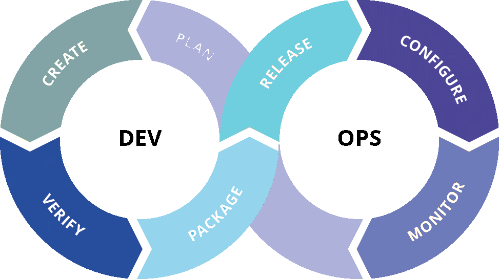

In Branchen, wie der E-Commerce-Branche,
müssen Unternehmen mit allen neuen Technologien auf dem Laufenden bleiben, um mit ihren Kunden in Verbindung zu bleiben. Wenn sie eine hohen Kundenorientierung als Maßstab festgelegt haben, sind sie fast schon verpflichtet, DevOps-getriebene technische und geschäftliche Prozesse zu übernehmen, um ihre Software zu entwickeln.
Aufgrund des schnellen technologischen Wandels ist es ansonsten etwas schwierig, die Erwartungen des Kunden zu erfüllen.
DevOps ist ein Ansatz für eine schlanke, agile und automatische Softwarebereitstellung, der eine engere Zusammenarbeit zwischen den Teams (Entwicklungs- (Dev) und IT-Betriebsteams (Ops)) fördert. Traditionell arbeiteten Entwicklung und Betrieb getrennt und hatten völlig unterschiedliche Denkweisen.
Die DevOps-Kultur bringt sie näher zusammen, um anhand moderner Automatisierungstools und frischer Methoden, eine qualitativ hochwertigere und zuverlässigere Software zu Verfügung stellen zu können.
DevOps hilft nicht nur bei der Verbesserung des Kundenerlebnisses, sondern auch bei der Automatisierung und Skalierbarkeit des gesamten Entwicklungsprozesses.
DevOps mindert Kosten und steigert die Effizienz.
Die Einführung von organisationsweiten DevOps ist eine herausforderung, da sie einen kulturellen Wandel in Kombination mit einer praktischeren Implementierung von Tools und Best Practices erfordert. Eine Voraussetzung für die erfolgreiche Einführung von DevOps in Unternehmen besteht darin, dass sich die Menschen im Unternehmen ganz für die Sache engagieren und den Wandel wollen. Erst kommt also die Philosophie und Kultur und danach die Tools und Best-Practices.
1. Aktive Beteiligung von Stakeholdern
Dies ist das grundlegende Leitprinzip von DevOps. DevOps kann nur erfolgreich sein, wenn die verschiedenen Teams wirklich daran arbeiten, einen integrierten Ansatz zu verfolgen, um ihre Ziele zu erreichen.
2. Automatisiertes Testen ist die Praxis der Automatisierung und Integration von Tests in den Software Development Life Cycle (SDLC). Es ermöglicht Entwicklern, die Probleme während der Entwicklungsphase und nicht später im Prozess zu erkennen und zu lösen.
3. Ein integriertes Konfigurationsmanagement , welches sich auf den automatisierten Prozess bezieht, welcher sicherstellt, dass alle Umgebungen, in denen Software während des Entwicklungslebenszyklus gehostet wird, optimal konfiguriert und gewartet werden (Server, Rechenzentren, Netzwerke, Betriebssysteme, IT-Assets und Apps). Das Konfigurationsmanagement
hilft Betriebsteams, die potenziellen Auswirkungen eines neuen Releases klarer zu erkennen, was dazu beiträgt, bessere Entscheidungen darüber zu treffen, wann das Release erfolgen sollte.
4. Integriertes Changemanagement Dort arbeiten Betriebs- und Entwicklungsteams zusammen, um zu verstehen, wie sich der Einsatz verschiedener Technologien auf das gesamte Unternehmen auswirkt, und arbeiten dann daran, dies zu managen.
5. Continuous Integration ermöglicht es Entwicklern, kontinuierlich neuen und aktualisierten Code in einem gemeinsamen, zentralen Versionskontrollsystem zusammenzuführen, wonach die automatischen Builds und Tests ausgeführt werden.
Dies bietet sofortiges Feedback zu Codefehlern, wodurch Entwickler eine qualitativ hochwertige Lösung mit geringem Risiko erstellen können.
6.Integrated Deployment Planning & Continuous Deployment Ein DevOps-Ansatz bedeutet, dass die Betriebsingenieure eng mit den Entwicklern verbunden sind, wenn es darum geht, die Bereitstellung von Produkten gemäß einem organisatorischen Bereitstellungsplan zu planen.
Continuous Deployment ermöglicht es dem DevOps-Team, den gesamten Prozess vom Code-Commit bis zur Produktion zu automatisieren. Da der Trigger zwischen der Entwicklungs- und Auslieferungsphase automatisch erfolgt, werden die Codeänderungen direkt aktualisiert, sobald sie alle Testfälle durchlaufen haben. So erhalten Kunden Verbesserungen, sobald sie verfügbar sind.
Continuous Delivery
ist ein Softwareentwicklungsprozess, bei dem Codeänderungen, einschließlich Konfigurationsänderungen, neue Funktionen und Fehlerkorrekturen, automatisch getestet und für eine Produktionsfreigabe vorbereitet werden. Der Code befindet sich immer in einem freigebbaren Zustand, sodass er jederzeit gemäß den Geschäftsanforderungen automatisch in der Produktion bereitgestellt werden kann. Dies ermöglicht dem Entwicklungsteam, Software schnell und regelmäßig zu erstellen, zu testen und zu veröffentlichen.
Laut dem Forschungsunternehmen Gartner ist eine verknüpfte Toolchain von Technologien jetzt entscheidend geworden, wenn DevOps den Wandel herbeiführen soll, für den es gedacht ist. In den letzten Jahren hat es eine Explosion von DevOps-Tools für verschiedene DevOps-Praktiken gegeben.
